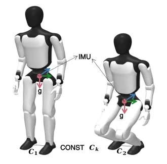
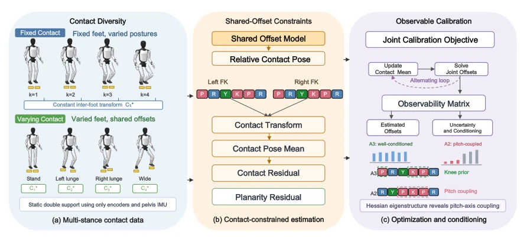
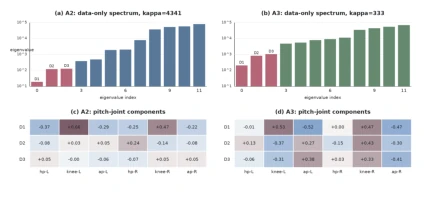
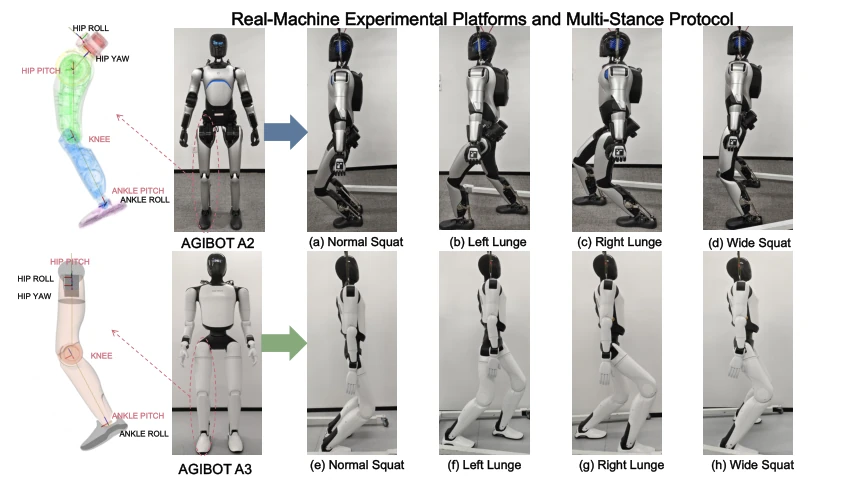
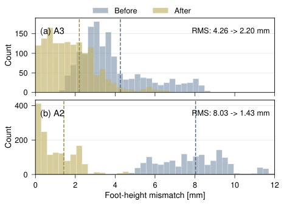
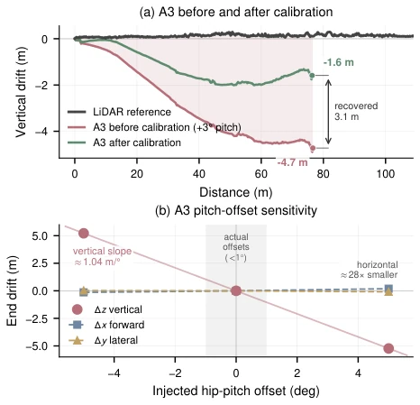
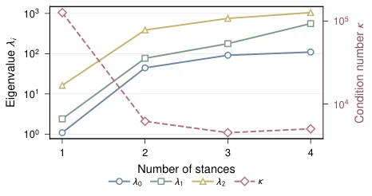

This paper attempts to calibrate the lower limb joint offsets of humanoid robots using only onboard sensors without relying on external motion capture. The highlight lies in constructing a self-contained framework utilizing double-support contact constraints and IMU gravity information, avoiding expensive calibration fields and demonstrating strong engineering practicality. Hessian eigenstructure analysis reveals the mathematical essence of parallel pitch axis coupling, which is technically rigorous, explaining why certain kinematic orderings are harder to calibrate. However, a point of criticism is that the performance difference between A3 and A2 is too large, indicating the method is sensitive to kinematic ordering, and the weak direction (pitch chain) relies heavily on priors (knee prior); does this count as "cheating"? Additionally, LiDAR validation only measured vertical drift, with little mention of the horizontal direction, feeling somewhat like avoiding the main issue. Nevertheless, for on-site rapid calibration, this solution is indeed much more practical than using a laser tracker, at least not requiring the robot to be tethered in a laboratory.
Accurate joint offsets are crucial for motion control; accumulated errors lead to foot placement errors and decreased balance [3]. Existing calibration relies on external motion capture or laser trackers [3], [4], which is not feasible on-site. Vision-based schemes are unreliable because feet are often out of view [5], [6]. Although contact constraints are used for state estimation [7]-[9], few are used for offline calibration and analyze parallel pitch axis coupling. Yamane [11] used contact constraints but did not formally analyze parallel axis coupling. This paper aims to solve the self-calibration problem without external equipment, using only onboard sensors, and address the weak observability direction problem caused by kinematic ordering. Especially for specific structures like AGIBOT A2/A3, existing methods cannot guarantee numerical observability.

Fig. 1. Calibration principle. Upright and squat postures share the same fixed-foot transform Ck; the pelvis IMU provides gravity g.
The overall process is based on double-support contact consistency. First, collect static data in multiple postures, utilizing the constraint that inter-foot transformation $C_k$ should be constant to construct a nonlinear least squares problem. The optimization objective includes inter-foot contact residuals, IMU-assisted flat-ground constraints (consistent foot height and vertical normal) and Tikhonov regularization. An alternating optimization strategy is adopted: fix offsets to update contact mean, fix mean to update offsets. The innovation lies in Hessian eigenstructure analysis, pointing out that parallel pitch axes cause rotation Jacobian columns to be collinear, only allowing observation of offset sums. For A3 (P-R-Y), Roll/Yaw are used to excite decoupling; for A2 (R-Y-P), it relies on Knee priors and strong regularization. Data preprocessing includes contact consistency filtering and posture clustering. A 12-dimensional offset vector is estimated by minimizing the dispersion of inter-foot transformations, combined with IMU gravity direction constraints on foot planarity. This method transforms physical constraints into mathematical optimization problems, solving the problem of traditional methods relying on external equipment, while clarifying observability differences under different kinematic orderings through eigenstructure analysis.

Fig. 2. Calibration pipeline: collect multi-stance double-support data, form contact and flat-ground residuals, and alternate contact-mean updates with offset optimization. P/R/Y/K denote pitch/roll/yaw/knee; red, blue, and green boxes encode pitch, roll, and yaw, and dashed outlines mark pitch coupling.

Fig. 4. Matched four-stance real data. Top: Hdata eigenvalues, the squared singular values of Jdata. Bot- tom: pitch components of its three weakest eigenvectors, D1–D3. The physical-platform gap is not ordering-only.
Validated on AGIBOT A2/A3 real robots and MuJoCo simulation. Metrics include injected error recovery, foot height residual RMS, and LiDAR odometry drift. A3 simulation injected recovery error peak is 0.27°. After real robot calibration, A3 foot height RMS decreased from 4.26 to 2.20mm, A2 from 8.03 to 1.43mm. LiDAR validation shows vertical drift reduced by 25.5%. Ablation experiments show that increasing posture diversity significantly improves A2 condition number, but saturates quickly. Knee prior significantly improves A3 condition number, but is ineffective for A2. Compared to Yamane [11] method, there is no absolute advantage, depending on the platform. Simulation and real robot results are consistent, proving the method's effectiveness. Additionally, independent LiDAR inertial odometry checked the pitch coupling channel; removing the injected pitch offset caused the leg odometry vertical drift to return to the LiDAR trajectory, verifying the calibration effect in the vertical direction.

Fig. 3. Real-machine A2 and A3 platforms and the four-stance protocol. Only onboard encoders and a pelvis IMU are used.

Fig. 5. Held-out flat-ground validation without injected offsets. Histograms show per-frame foot-height residu- als before and after calibration, pooled over validation recordings not used for optimization. Each platform contributes 1500 held-out frames. Dashed lines denote RMS values.

Fig. 6. A3 validation against LiDAR-inertial odometry. The left panel shows a held-out walk with a +3◦pitch offset. The right panel shows a vertical sensitivity of 1.04 m per degree.

Fig. 7. A2 stance diversity for Hreg: three smallest eigenvalues and κ(Hreg).